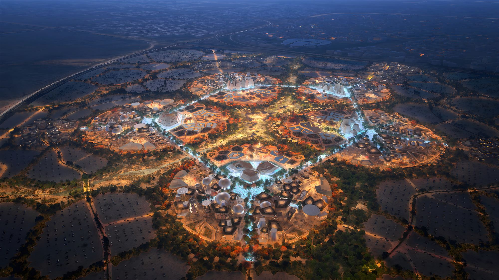

عين ترى
ذكاء يفهم
ونظام يستجيب
راصد يجمع الكاميرات والحساسات والذكاء الاصطناعي في منصة واحدة: يكتشف الحالة لحظة حدوثها، ينبّه الفريق المختص فورًا، ويوثّقها في تقرير جاهز للمراجعة.
المشكلة
آلاف الزوار، مناطق متعددة… ولا صورة تشغيلية واحدة.
أنظمة منفصلة
بطء الاستجابة
تأخر اكتشاف الحوادث
صعوبة توثيق الحوادث
الحل: رصد متكامل لبيئة المعرض
منصة واحدة ترى الحركة… وتشعر بالبيئة.
الحركة والطوارئ — عبر الكاميرات
- الازدحام وكثافة الحشود
- حالات السقوط
- الأسلحة والعنف
- أصوات الطلقات والانفجارات
البيئة الداخلية والسلامة — عبر الحساسات
- مؤشرات الحريق والدخان
- ارتفاع الحرارة غير الطبيعي
- تشغيل التهوية تلقائيًا
رحلة التنبيه
من لحظة رصد الحالة… حتى اعتماد التقرير.
اكتشاف
الكاميرات والحساسات تلتقط الحالة.
تحليل
الذكاء الاصطناعي يحدد نوع الحالة وخطورتها.
تنبيه
يصل التنبيه للفريق المختص مع صورة اللقطة.
استجابة
الفريق يتعامل مع الحالة في موقعها.
توثيق
تسجيل الحالة وإنشاء مسودة تقرير قابلة للتعديل.
مراجعة
مراجعة التقرير وتدقيقه قبل اعتماده.
بنية النظام
أربع طبقات بسيطة… تعمل كمنظومة واحدة.
01المدخلات
الكاميرات والميكروفونات
بث فيديو وصوت مباشر
حساسات البيئة
الحرارة والرطوبة والضغط
02التحليل
محرك الذكاء الاصطناعي
رؤية حاسوبية وتحليل صوت
عقدة التحكم المحلي
تشغّل المراوح عند تجاوز حد الحرارة
03المنصة
خادم راصد
يجمع الأحداث والقراءات ويديرها ويحفظها في مكان واحد
04المخرجات
لوحة تحكم موحدة
تحديث لحظي
تنبيهات فورية
للفريق المختص مع الصورة
تقارير
مسودات جاهزة للمراجعة
خريطة راصد (إكسبو)

الاختبار والتحقق
مقطع فيديو محاكاة لبيئات المعارض والتجمعات
دقة في اكتشاف الازدحام وتحديد كثافة الحشود
لرصد حالات السقوط والحوادث
نجاح وصول التنبيهات الفورية
فريق راصد